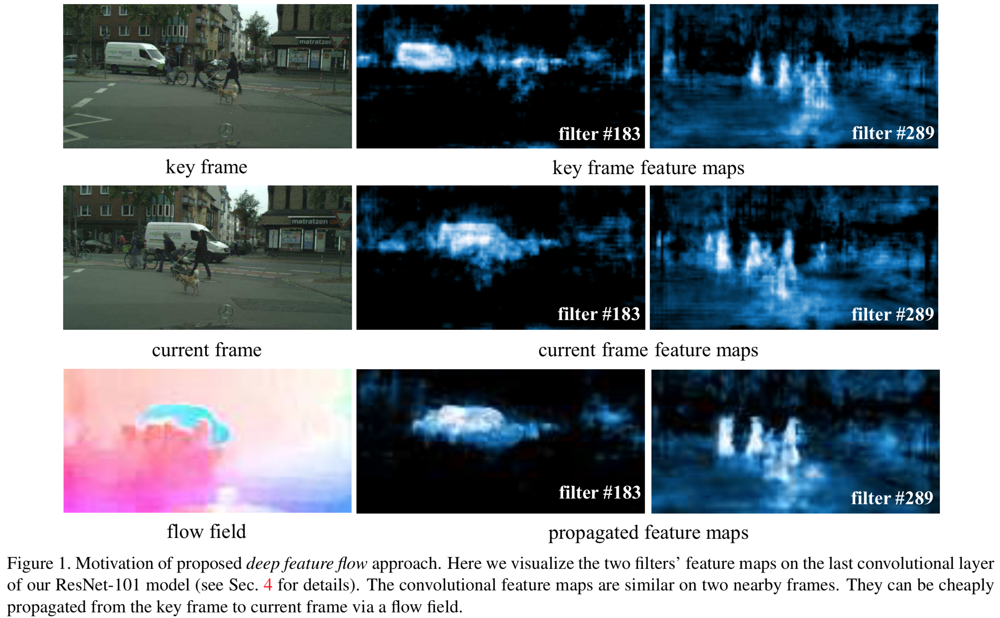
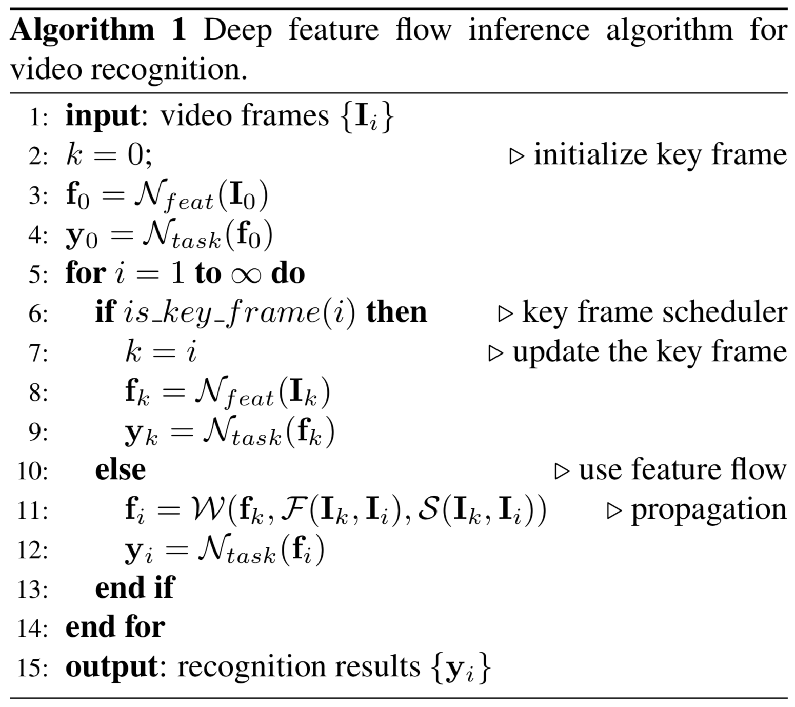

painterdrown Blog - painterdrown CV
Deep Feature Flow for Video Recognition 学习笔记
⏰ 2018-06-01 00:00:00
👨🏻💻 painterdrown
Deep Feature Flow for Video Recognition 学习笔记0. Abstract1. Introduction2. Related Work3. Deep Feature Flow3.1. Inference3.2. Training3.3. Inference Complexity Analysis3.4. Key Frame Scheduling4. Network Architectures4.1. Flow Network4.2. Feature Network4.3. Semantic Segmentation4.4. Object Detection5. Future Work6. Resources
Oh yeah, 终于开始看视频目标检测啦！BTW，🎈 Happy Children's Day 🎈
0. Abstract
目前的图像目标检测已经发展地比较成熟了，不过如果单帧地应用在视频上则显得太慢了。作者提出了 deep feature flow（深度特征流，一个又快又准的视频目标检测框架。它只在 sparse key frames 上跑卷积，通过 deep feature maps 在同一个流场（我理解为一段连续的且比较相似的帧）的其它帧之间进行传播。训练是端到端的，速度和精度（精度有吗？感觉还不如 Faster R-CNN）上都有明显的提升。
1. Introduction
从图像识别到视频识别，要处理好视频帧之间的连续性以及冗余的信息。现在大多数的 CNN 架构里面，卷积计算占计算资源消耗的主体。计算出来的 convolutional feature maps 保留了图像的低级内容到中高级语义内容的对应关系。这样一来，就可以轻易地在相邻帧之间传播特征信息（by spatial warping 空间变形），这与光流类似。
一般来说，flow estimation & feature propagation 比简单地去计算多帧的 convolutional features 要快得多。而且如果能用网络做 flow estimation 的话，整个视频目标检测架构就是端到端的。

2. Related Work
- Image Recognition。已经有很多成熟的网络了，可以看我前面图像目标识别的学习笔记，这里不赘述。
- Network Acceleration。比如 Fast R-CNN 里面的矩阵分解；比如 Quantized Neural Networks 的参数量子化（暂未了解）。
- Optical Flow（光流）。这个我之前在研究生学习班里几次听到这个概念。它是视频分析的基本任务，目前主要关注的是 small displacements，最近逐渐转向 large displacements，以及加入 combinatorial matching（组合匹配）这个概念。现在的深度学习已经逐渐漫延到光流这一块，FlowNet 用深层 CNN 来估算视频中的 motion 并且有不错的效果。总而言之，光流在计算机视觉方面有奇效，比如 pose estimation（姿态估计），应该探索如何应用于视频目标检测中。
- Exploiting Temporal Information in Video Recognition。这里要解决的问题是，如何挖掘视频中的时间信息？在 T-CNN 里面，其融合了时间和上下文信息；FSO 提出了大范围的时空正则化；STFCN 用一个时空的 FCN 来做视频语义分割。虽然这些方法提升了精度，但是还是需要大量的计算，影响了速度。
- Slow Feature Analysis。在视频里面，高级的语义概念往往比低级的图像外观演化得更慢，因此这些深度的特征在视频帧之间的变化十分平滑。
- Clockwork Convnets。它做的事情跟 Deep Feature Flow 很类似：都是使网络中的某些层在视频中的某些帧上失效以及特征复用。但是由于没有考虑到不同帧之间的对应信息，Clockwork Convnets 在加速的时候会损失较多的精度。
3. Deep Feature Flow

3.1. Inference
总网络（feed-forward convolutional neutral）可以分解为连续的两部分：Nfeat（特征网络） 和 Ntask（任务网络）。前者（全卷积）会输出许多 feature maps，后者会在这些 feature maps 上面做检测任务。
通过流估计算法得到 flow field（我理解为关键帧及其相邻帧之间的流信息）。通过双线性插值来做 feature warping。为了减少流估计算法带来的误差，通过 “scale field” 来做更好的特征估计。
伪代码如下：

3.2. Training
Flow function 本来是用来获取低级的图像信息的，不适用于高级 feature maps 的提取。作者用一个 CNN 去估算 flow fiel 和 scale field。因此，就可以进行端到端的训练。
训练的方法是 SGD（随机梯度下降）。在每一个 mini-batch 里面，随机地到连续的 10 帧里面随机抽取两帧 Ik（关键帧） 和 Ii。前面说到的 Nfeat 跑在 Ik 上，然后 flow network Nflow 跑在 Ik 和 Ii 上来算出 flow field 和 scale field。Nflow 的速度要比 Nfeat 快很多，前者是在 Flying Chairs dataset 上预训练的。在 Nflow 最后输出层加上一个 sibling：scale function。
值得一提的是，视频检测的训练集标注的代价很高（特别是对于采用 per-frame 做法的网络）。但是 DFF 则不同，它只要求 Ii 帧的数据集有标准就足够了。
3.3. Inference Complexity Analysis
这一段主要是在分析 inference 的复杂度，inference 可以理解为用训练出来的模型去 test。分析的过程参考原论文吧。
3.4. Key Frame Scheduling
这篇论文用的方法是固定长度地选取一个关键帧。但是作者提到，最理想的做法是将发生剧烈变化的帧作为关键帧。
4. Network Architectures
4.1. Flow Network
这里用的是 FlowNet 的简单版本：将每一层卷积核的数目减少一半，这样整个网络的复杂度就变为原来的四分之一。再者，加入 FlowNet Inception 并且将其复杂度降低为 FlowNet 的八分之一。
4.2. Feature Network
这里用的是在 ImageNet 上预训练的 ResNet-50 和 ResNet-101（取消了最后的 1000-way 分类层）。为了生成更稠密的 feature maps，将其步长从 32 减小到 16。后面：
- 如果做语义切割，则用 DeepLab；
- 如果做目标检测，则用 R-FCN。
4.3. Semantic Segmentation
暂时对这里没兴趣。
4.4. Object Detection
参考 R-FCN 学习笔记，这里不做赘述。
5. Future Work
由于要研究视频目标检测这一块，所以有必要了解一下这个话题。
- How the joint learning affects the flow quality?
作者目前无法对此进行估算，因为缺少 ground truth（真实数据）。目前传统的光流技术受限于人造的或者小的数据集，对于深度学习来说数据还是很稀缺的。
- How to benefit from improvements in flow estimation and key frame scheduling?
关键帧的选择会较大地影响后面的检测效果。作者前面提到，这篇论文是定长地选取关键帧。然而最佳的做法是选取变化最大的帧作为关键帧，目前来说这可能会消耗过多的计算资源，希望在将来能在将这个 task 放在网络中来做。